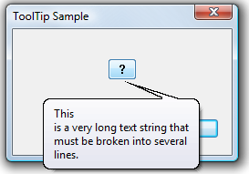

Multiline tooltips allow text to be displayed on more than one line.
They are supported by version 4.70 and later of the common controls. Your application creates a multiline tooltip by sending a TTM_SETMAXTIPWIDTH message, specifying the width of the display rectangle. Text that exceeds this width wraps to the next line rather than widening the display region. The rectangle height is increased as needed to accommodate the additional lines. The tooltip control wraps the lines automatically, or you can use a carriage return/line feed combination, \r\n, to force line breaks at particular locations.
The resulting display is shown in the following illustration.

[!Note]
The text buffer specified by the szText member of the NMTTDISPINFO structure can accommodate only 80 characters. If you need to use a longer string, point the lpszText member of NMTTDISPINFO to a buffer containing the desired text.
Â
The following code fragment is an example of a simple TTN_GETDISPINFO notification handler. It enables a multiline tooltip by setting the display rectangle to 150 pixels. A manual line break is inserted after the first word to show that line breaks can be hard as well as soft.
case WM_NOTIFY:
{
switch (((LPNMHDR)lParam)->code)
{
case TTN_GETDISPINFO:
LPNMTTDISPINFO pInfo = (LPNMTTDISPINFO)lParam;
SendMessage(pInfo->hdr.hwndFrom, TTM_SETMAXTIPWIDTH, 0, 150);
wcscpy_s(pInfo->szText, ARRAYSIZE(pInfo->szText),
L"This\nis a very long text string " \
L"that must be broken into several lines.");
break;
}
break;
}
Â
Â